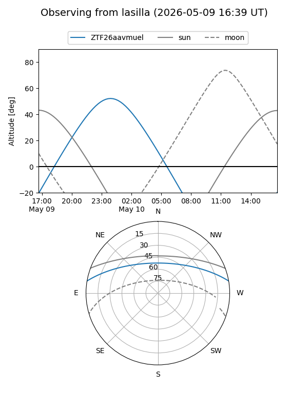
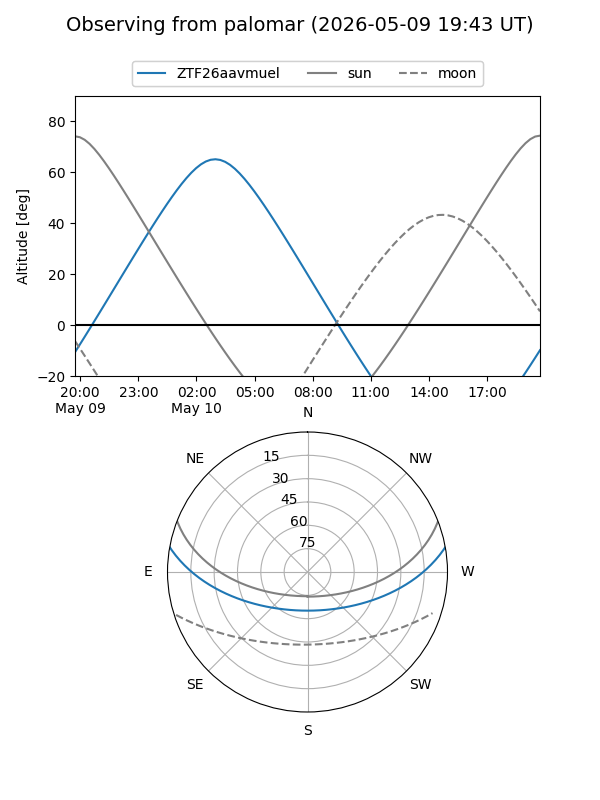

ZTF26aavmuel
Target ZTF26aavmuel at 2026-05-10 05:04
Aliases and brokers:
FINK: link
Lasair: link
ALeRCE: link
alt names
ZTF26aavmuel (ztf,fink_ztf)
Coordinates:
equatorial (ra, dec) = 155.1910,+8.64262
equatorial (HMS+DMS) = 10:20:45.84,+08:38:33.43
galactic (l, b) = (233.2001,+49.90705)
Flags:
Photometry:
last ztfg=19.65
1 ztfg detections
Lightcurve
Visibility


Additional plots